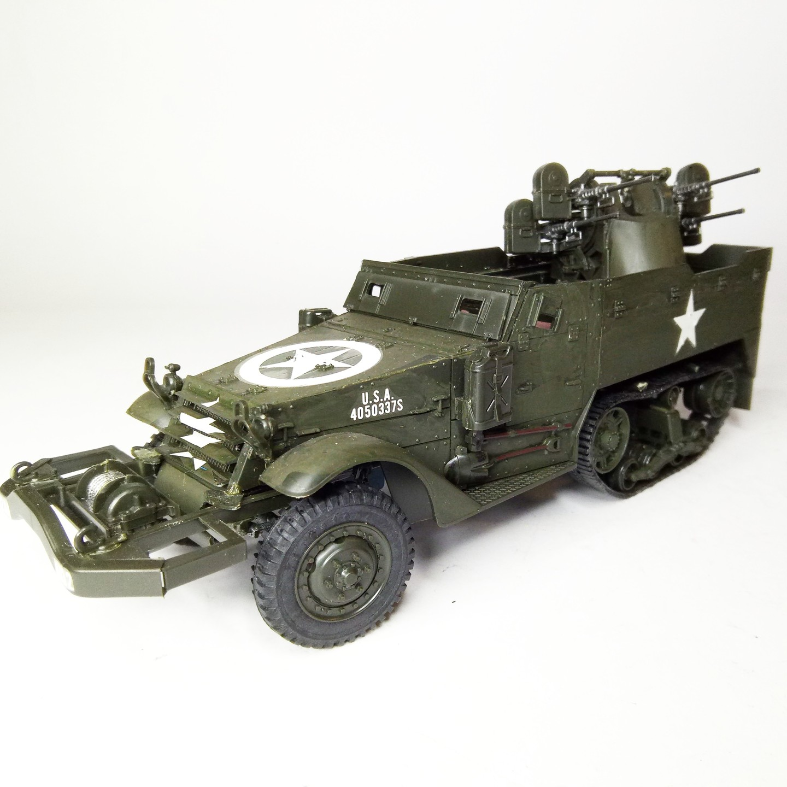
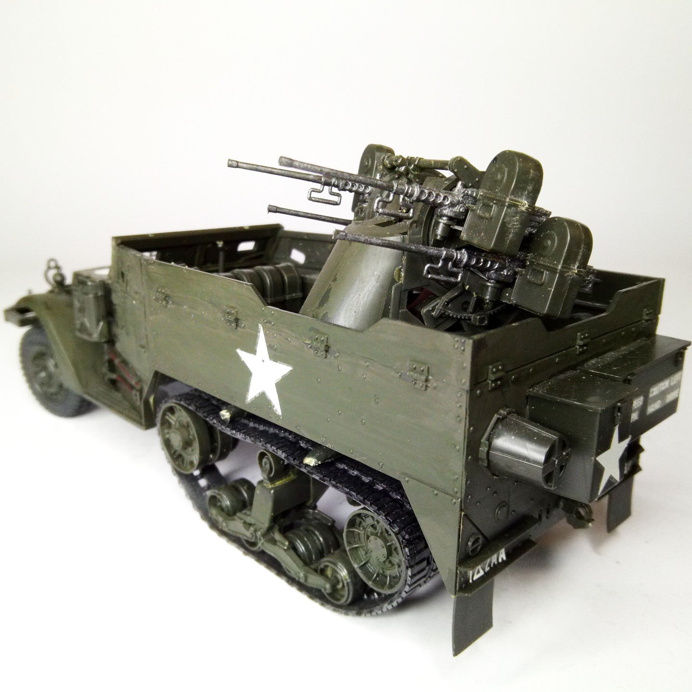

Mezzi militari · scale model archive
U.S. Multiple Gun M16 Half-Track
U.S. Multiple Gun M16 Half-Track — Kit: Tamiya, Scale: 1/35. Factory fresh #1/35 #Tamiya #M16 #HalfTrack

Photo gallery

English description
Factory fresh
#1/35 #Tamiya #M16 #HalfTrack
Descrizione italiana
Appena uscito dalla fabbrica.